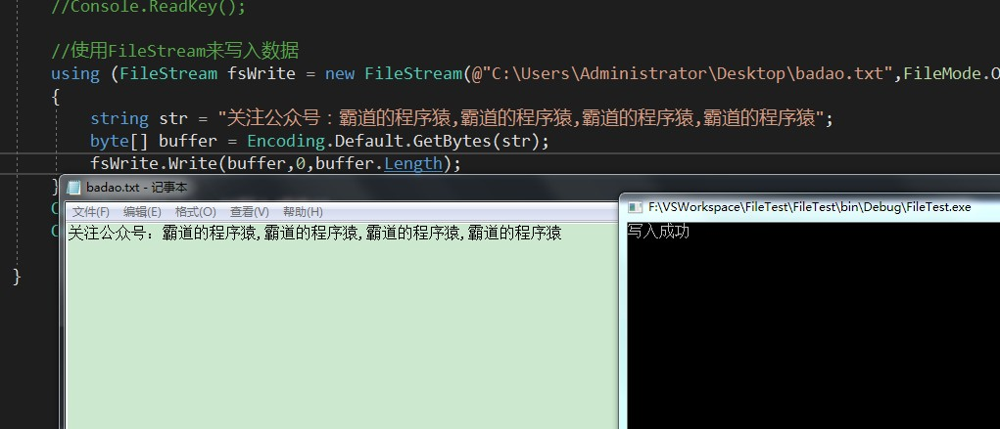

CS中FileStream的对比以及使用方法：
https://blog.csdn.net/BADAO_LIUMANG_QIZHI/article/details/100396022
关注公众号
霸道的程序猿
获取编程相关电子书、教程推送与免费下载。
将创建文件流对象的过程写在using中，会自动的帮助我们释放流所占用的资源。
新建命令行程序：
//使用FileStream来写入数据
using (FileStream fsWrite = new FileStream(@"C:\Users\Administrator\Desktop\badao.txt",FileMode.OpenOrCreate,FileAccess.Write))
{
string str = "关注公众号：霸道的程序猿,霸道的程序猿,霸道的程序猿,霸道的程序猿";
byte[] buffer = Encoding.Default.GetBytes(str);
fsWrite.Write(buffer,0,buffer.Length);
}
Console.WriteLine("写入成功");
Console.ReadKey();
